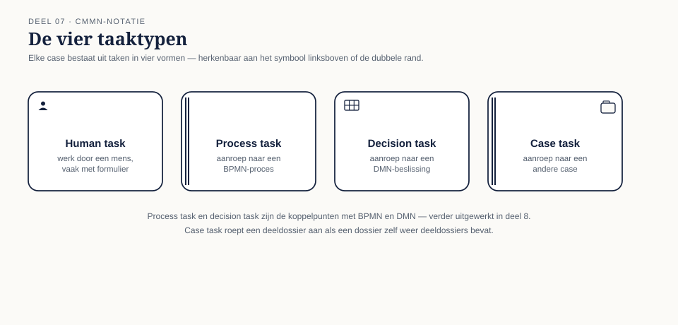
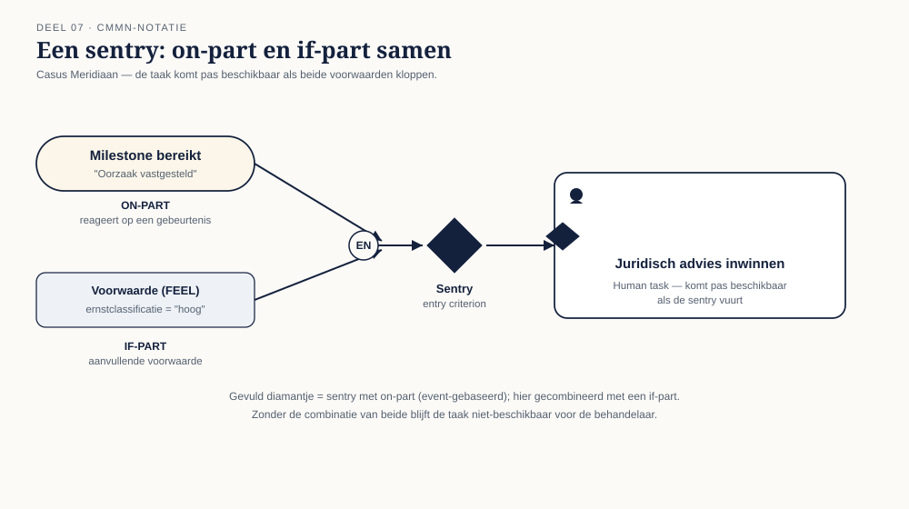
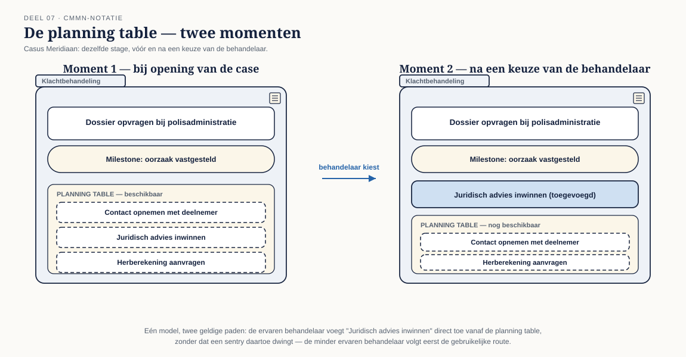

Deel 7 — CMMN basis
Slidedeck · Ductus-cursus BPMN, CMMN & DMN · niveau 1 · deel 7 van 30 · 27 slides
Slide 1 — Titelslide
CMMN basis — Deel 7
Beeldmerk, cursustitel
Spreeknotitie: De derde en laatste taal van dit niveau.
Slide 2 — Leerdoelen
Na vandaag kun je…
Zeven leerdoelen uit de reader
Spreeknotitie: Kort.
Slide 3 — Een andere vraag
"Wat gebeurt hierna?" versus "wat zou hier kunnen gebeuren?"
Twee vraagtekens naast elkaar
Spreeknotitie: BPMN vraagt het eerste, CMMN het tweede. Dat is het hele verschil in één zin.
Slide 4 — Terug naar deel 1
Dossierwerk: geen vaste volgorde
Herhaling van figuur 1.1
Spreeknotitie: CMMN is de taal voor wat daar al benoemd werd.
Slide 5 — De klacht bij Meridiaan
Vijf mogelijke stappen, geen vaste volgorde
Casusfragment uit §7.1
Spreeknotitie: Twee klachten die identiek lijken, kunnen volledig verschillende paden doorlopen.
Slide 6 — Opdracht 1
Case of proces? Vijf fragmenten
Werkboekverwijzing, timer 20 minuten
Spreeknotitie: Individueel, plenair nabespreken. Fragment 3 is bewust tweeslachtig.
Slide 7 — Het case file
De motor van het model
Een dossiermapje-icoon met case file items erin
Spreeknotitie: In CMMN stuurt het dossier het gedrag — niet andersom.
Slide 8 — Case file items
Wat er in het dossier zit
Voorbeeld: drie case file items bij de klachtcasus
Spreeknotitie: Kort.
Slide 9 — Stages, tasks, milestones
De bouwstenen van een case
 Figuur 7.1, leeg
Figuur 7.1, leeg
Spreeknotitie: Introductie van de drie basisvormen.
Slide 10 — Vier taaktypen
Human · process · decision · case

Figuur 7.2
Spreeknotitie: Process en decision task zijn de koppelpunten naar BPMN en DMN — komt terug in deel 8.
Slide 11 — Milestones
Een punt bereikt, geen werk
Voorbeeld: "dossier compleet", "deelnemer geïnformeerd"
Spreeknotitie: Geeft houvast zonder een pad voor te schrijven.
Slide 12 — Sentries
Wanneer komt iets beschikbaar, wanneer sluit het af

Figuur 7.3, leeg
Spreeknotitie: Introductie.
Slide 13 — On-part en if-part
Een gebeurtenis, plus een voorwaarde
Figuur 7.3, ingevuld
Spreeknotitie: Beide moeten kloppen wil de sentry vuren.
Slide 14 — Het scherpste verschil met BPMN
Discretionary items
Icoon van een open lijst met een handje ernaast
Spreeknotitie: De behandelaar kiest, het model schrijft niet voor.
Slide 15 — De planning table
Wat is er nu beschikbaar om toe te voegen?

Figuur 7.4, moment 1: bij opening van de case
Spreeknotitie: Introductie van het mechanisme.
Slide 16 — Twee behandelaars, twee paden
Zelfde model, ander pad
Figuur 7.4, moment 2: na een keuze
Spreeknotitie: Casusfragment §7.5 — de ervaren versus de minder ervaren behandelaar.
Slide 17 — Opdracht 2
Herken tien elementen in een bestaand model
Werkboekverwijzing, timer 20 minuten
Spreeknotitie: Individueel, klassikaal nabespreken.
Slide 18 — Vijf decorators
Required · repetition · manual activation · auto-complete
 Figuur 7.5
Figuur 7.5
Spreeknotitie: Ze bepalen hoe een element zich gedraagt, niet of het kan gebeuren.
Slide 19 — Van tekst naar casemodel
Vijf stappen — geen happy path
§7.7 als genummerde lijst
Spreeknotitie: Bewust anders dan de BPMN-werkwijze uit deel 3. Geen voorkeurspad om mee te beginnen.
Slide 20 — Opdracht 3
Modelleer klachtbehandeling — het volledige scenario
Werkboekverwijzing, timer 35 minuten
Spreeknotitie: Individueel in Conductus. Let op: verwacht dat velen een vaste volgorde proberen af te dwingen — dat is het leermoment.
Slide 21 — Het antipatroon dat nu waarschijnlijk gebeurt
CMMN gebruiken om toch een pad voor te schrijven
Fout/goed: sentries die drie discretionaire acties dwingend na elkaar zetten, versus echt vrije keuze
Spreeknotitie: Alleen tonen ná opdracht 3, als reflectie — niet vooraf, laat het zelf ontdekt worden.
Slide 22 — Opdracht 4
Volg twee dossiers door hetzelfde model
Werkboekverwijzing, timer 20 minuten
Spreeknotitie: Tweetallen. De bevestigingsvraag aan het eind is de kern: één model, twee volledig andere paden.
Slide 23 — Opdracht 5
Kies de juiste decorator — vier scenario's
Werkboekverwijzing, timer 10 minuten
Spreeknotitie: Kan klassikaal in plaats van individueel bij tijdsdruk.
Slide 24 — Waarom CMMN het waard is
Ondanks beperkte toolondersteuning
Korte tekstslide, verwijzend naar de disclaimer in de reader
Spreeknotitie: De denkwijze is onmisbaar, ongeacht welk platform je uiteindelijk gebruikt.
Slide 25 — Het onderscheid dat blijft terugkomen
Drie soorten werk, drie talen — nu compleet
BPMN, DMN, CMMN naast elkaar, elk met hun kernvraag
Spreeknotitie: Herhaling van de kern uit deel 1, nu met alle drie de talen gekend.
Slide 26 — Opdracht 6
Stellingen
Vier stellingen uit het werkboek
Spreeknotitie: Plenair.
Slide 27 — Vooruitblik
Deel 8 — de drie talen samen
Aankondiging: de keuzeboom, de koppelpunten, de antipatronen
Spreeknotitie: Neem je casemodel mee — dat koppel je in deel 8 aan het BPMN-model uit deel 3-5.